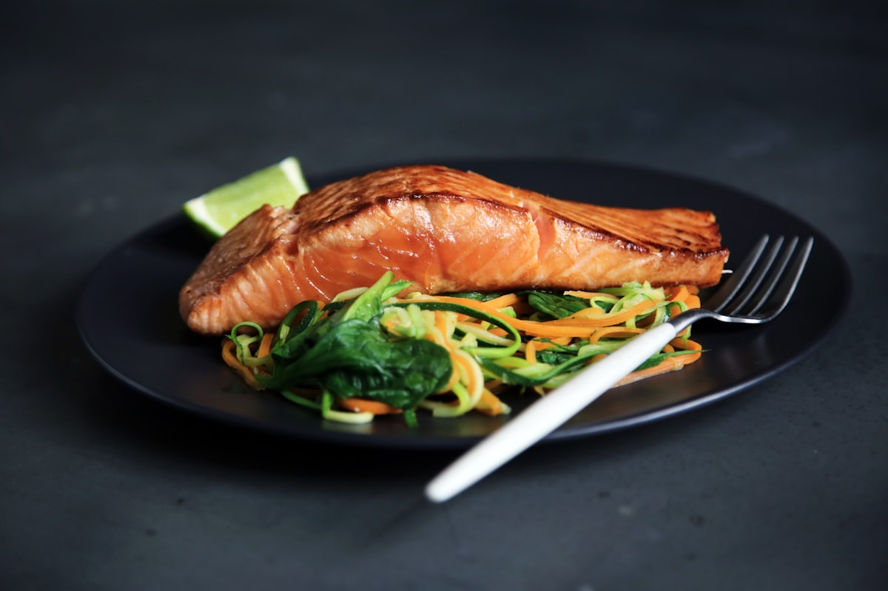

Authentic Thieboudienne, Dibi Lamb & Jollof Rice
Experience true West African hospitality (Teranga) in Charlotte. Savor national dishes like Ceebu Jën (spiced broken jasmine rice with seasoned whole fish and root vegetables), charcoal-seared Dibi Lamb with caramelized Dijon onions, rich peanut Mafé stew, and golden fried alloco plantains.

Senegalese Thieboudienne (Ceebu Jën)
Fragrant red broken jasmine rice simmered in rich herb and tomato broth, served with seasoned fresh fish, braised cassava, sweet carrots, cabbage, and spicy tamarind relish.
From the Streets of Dakar to The Plaza
Every recipe is prepared with time-honored techniques, aromatic ancestral spices, and the welcoming warmth of Teranga.

Charcoal Dibi Lamb (Agneau)
Tender bone-in lamb seasoned with West African spices, seared over high heat, and smothered in a rich mound of sweet caramelized Dijon mustard onions.

Yassa Poulet (Lemon Chicken)
Marinated grilled chicken leg quarters braised in a deeply caramelized onion, fresh lemon juice, garlic, and Dijon gravy over fluffy jasmine rice.

Crispy Tilapia & Attiéké
Whole seasoned tilapia fried golden and crispy, accompanied by light steamed fermented cassava couscous (attiéké), fresh tomato-onion salad, and spicy pepper relish.
A Taste of Home for the Carolinas
Located on The Plaza in East Charlotte, Tima African Restaurant is a culinary beacon for both diaspora families craving home flavors and local food lovers seeking extraordinary depth of spice.
Enjoy golden fried alloco sweet plantains, crispy savory fish pastelles, and wash it all down with fresh iced Bissap (sweet hibiscus tea infused with fresh garden mint).

The Dakar Royal Banquet
Full catering spread featuring pans of Thieboudienne (Ceebu Jën), Jollof Rice, grilled Dibi Lamb pieces with Dijon onions, golden alloco sweet plantains, fish pastelles, and barrels of Bissap hibiscus juice.